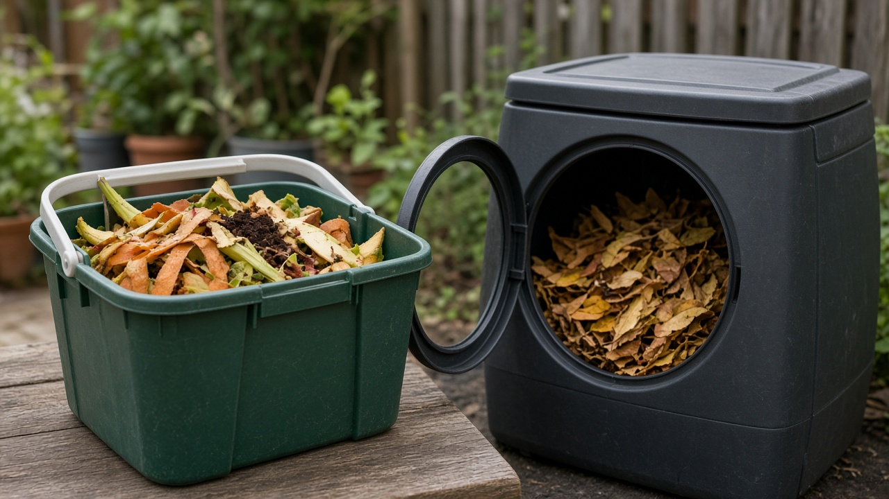
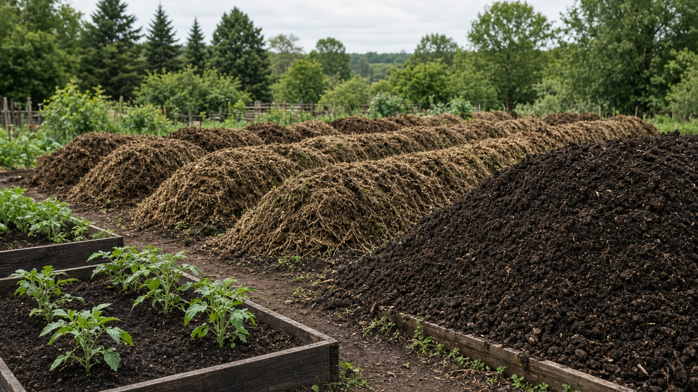
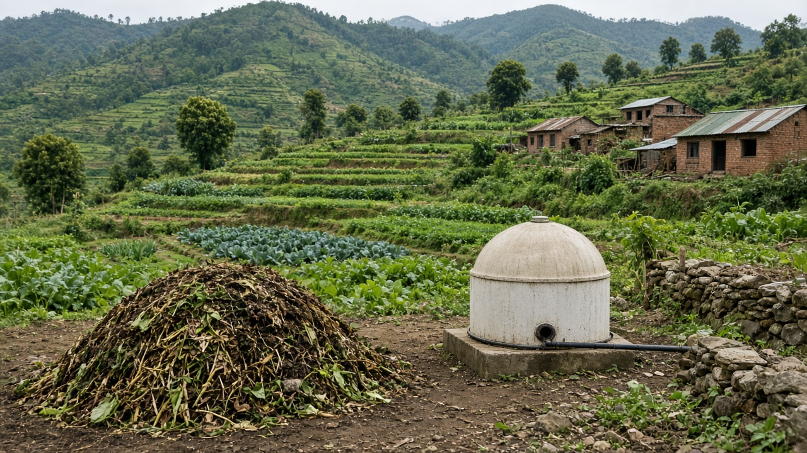

Composting and Organic Waste Management
Published on August 19, 2026

Organic waste includes food scraps, yard trimmings, agricultural residues, and other biodegradable materials that decompose naturally over time. In many cities, organic matter makes up more than half of municipal solid waste, yet it is often dumped alongside plastics and metals. When organic waste rots in landfills without oxygen, it produces methane, a potent greenhouse gas. Separating and managing organic waste at the source is one of the most effective ways to cut emissions and recover valuable nutrients for soil health.
Composting converts organic waste into a dark, crumbly soil amendment through controlled decomposition by microorganisms. Home compost bins, community composting sites, and large-scale aerobic composting facilities each serve different needs and scales. Proper composting requires a balance of green materials rich in nitrogen and brown materials rich in carbon, along with adequate moisture and aeration. Finished compost improves soil structure, retains water, and reduces the need for chemical fertilizers in gardens and farms.
Beyond composting, organic waste can be processed through anaerobic digestion to produce biogas for cooking or electricity while generating digestate for agriculture. Schools, municipalities, and farmers who adopt organic waste programs reduce landfill pressure and create local circular nutrient loops. Public education about separating kitchen waste, avoiding contamination, and using compost products closes the loop from plate to soil. Managing organic waste wisely turns a disposal problem into a resource for greener food systems.

जैविक फोहोरमा खाना बाँकी, बगैंचाको काटिएको भाग, कृषि अवशेष र समयसँगै प्राकृतिक रूपमा विघटन हुने अन्य बिघटनशील सामग्री समावेश छन्। धेरै सहरहरूमा जैविक पदार्थ नगरपालिका ठोस फोहोरको आधा भन्दा बढी हुन्छ, तर प्रायः प्लास्टिक र धातुसँगै फालिन्छ। अक्सिजन बिना ल्यान्डफिलमा जैविक फोहोर कुहिँदा मिथेन — एक शक्तिशाली ग्रीनहाउस ग्यास — उत्पादन हुन्छ। स्रोतमै जैविक फोहोर छुट्याउने र व्यवस्थापन गर्ने उत्सर्जन कम गर्न र माटोको पोषण पुन: प्राप्त गर्न सबैभन्दा प्रभावकारी उपायहरू मध्ये एक हो।
कम्पोस्टिङले सूक्ष्मजीवद्वारा नियन्त्रित विघटन प्रक्रियाबाट जैविक फोहोरलाई गाढा, भुरभुरे माटो सुधार सामग्रीमा रूपान्तरण गर्छ। घरेलु कम्पोस्ट बिन, सामुदायिक कम्पोस्टिङ स्थल र ठूलो पैमानाका वायवीय कम्पोस्टिङ केन्द्रहरूले फरक आवश्यकता र स्तर पूरा गर्छन्। उचित कम्पोस्टिङका लागि नत्र समृद्ध हरियो सामग्री र कार्बन समृद्ध खैरो सामग्रीको सन्तुलन, पर्याप्त नमी र हावा चाहिन्छ। तयार कम्पोस्टले माटोको संरचना सुधार्छ, पानी रोक्छ र बगैंचा र खेतमा रासायनिक मलको आवश्यकता घटाउँछ।
कम्पोस्टिङ बाहेक, जैविक फोहोरलाई एनारोबिक पाचन प्रक्रियाबाट खाना पकाउने वा बिजुलीका लागि बायोग्यास उत्पादन गर्न र कृषिका लागि डाइजेस्टेट बनाउन प्रशोधन गर्न सकिन्छ। विद्यालय, नगरपालिका र किसानहरूले जैविक फोहोर कार्यक्रम अपनाउँदा ल्यान्डफिलको दबाब घट्छ र स्थानीय चक्रिय पोषण लूप सिर्जना हुन्छ। भान्साको फोहोर छुट्याउने, प्रदूषण नगर्ने र कम्पोस्ट उत्पादन प्रयोग गर्ने सार्वजनिक शिक्षाले थालीदेखि माटोसम्मको चक्र पूरा गर्छ। जैविक फोहोर बुद्धिमानी व्यवस्थापनले निसर्जन समस्यालाई हरियो खाद्य प्रणालीको स्रोतमा बदल्छ।

जैविक अपशिष्ट में भोजन के अवशेष, बगीचे की कटाई, कृषि अवशेष और अन्य बिघटनशील सामग्री शामिल होती है जो समय के साथ प्राकृतिक रूप से विघटित हो जाती है। कई शहरों में जैविक पदार्थ नगरपालिका ठोस अपशिष्ट का आधे से अधिक हिस्सा बनाते हैं, फिर भी इन्हें अक्सर प्लास्टिक और धातु के साथ फेंका जाता है। जब जैविक अपशिष्ट बिना ऑक्सीजन के लैंडफिल में सड़ता है, तो मीथेन — एक शक्तिशाली ग्रीनहाउस गैस — उत्पन्न होती है। स्रोत पर जैविक अपशिष्ट को अलग करना और प्रबंधित करना उत्सर्जन कम करने और मिट्टी के पोषण को पुनर्प्राप्त करने के सबसे प्रभावी तरीकों में से एक है।
खाद बनाना सूक्ष्मजीवों द्वारा नियंत्रित विघटन प्रक्रिया के माध्यम से जैविक अपशिष्ट को गहरे, भुरभुरे मिट्टी संशोधक में बदलता है। घरेलू खाद बिन, सामुदायिक खाद स्थल और बड़े पैमाने की वायवीय खाद सुविधाएँ विभिन्न आवश्यकताओं और स्तरों की पूर्ति करती हैं। उचित खाद बनाने के लिए नाइट्रोजन से समृद्ध हरी सामग्री और कार्बन से समृद्ध भूरी सामग्री का संतुलन, पर्याप्त नमी और वायु संचार आवश्यक है। तैयार खाद मिट्टी की संरचना सुधारती है, जल धारण करती है और बगीचों और खेतों में रासायनिक उर्वरकों की आवश्यकता कम करती है।
खाद बनाने के अलावा, जैविक अपशिष्ट को एनारोबिक पाचन द्वारा प्रसंस्कृत किया जा सकता है, जिससे खाना पकाने या बिजली के लिए बायोगैस और कृषि के लिए डाइजेस्टेट उत्पन्न होता है। स्कूल, नगरपालिकाएँ और किसान जैविक अपशिष्ट कार्यक्रम अपनाकर लैंडफिल का दबाव कम करते हैं और स्थानीय चक्रीय पोषण चक्र बनाते हैं। रसोई के कचरे को अलग करने, प्रदूषण से बचने और खाद उत्पादों का उपयोग करने के बारे में सार्वजनिक शिक्षा थाली से मिट्टी तक का चक्र पूरा करती है। जैविक अपशिष्ट का समझदारी से प्रबंधन निपटान समस्या को हरे खाद्य प्रणालियों के संसाधन में बदल देता है।